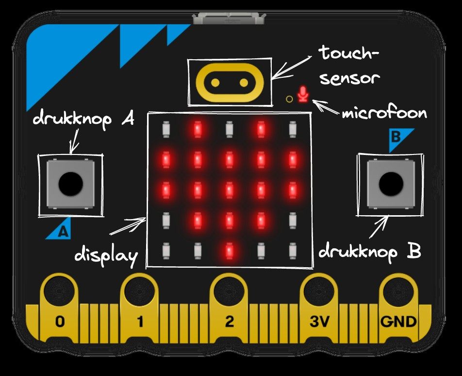

Initiation à la Carte Micro:bit
Présentation Générale
La carte Micro:bit est un microcontrôleur éducatif développé par la BBC pour initier les jeunes à la programmation et à l'électronique. Elle intègre de nombreux capteurs qui permettent de réaliser des projets créatifs et éducatifs.
Face Avant
- Écran LED 5x5
- Boutons A et B
- Connecteur d'extension
- LED d'alimentation
Face Arrière

- Processeur ARM Cortex-M0
- Accéléromètre et boussole
- Capteur de température
- Connecteur USB
Caractéristiques Techniques
Processeur
ARM Cortex-M0
Mémoire
16KB RAM
Capteurs
5 intégrés
Connectivité
Bluetooth
Premiers Pas
1
Télécharger l'éditeur
Rendez-vous sur le site officiel Micro:bit pour télécharger l'éditeur de programmation.
2
Connecter la carte
Utilisez un câble USB pour connecter la Micro:bit à votre ordinateur.
3
Programmer
Créez votre premier programme en blocs ou en Python.
4
Téléverser
Téléversez le programme sur la carte et testez-le immédiatement.